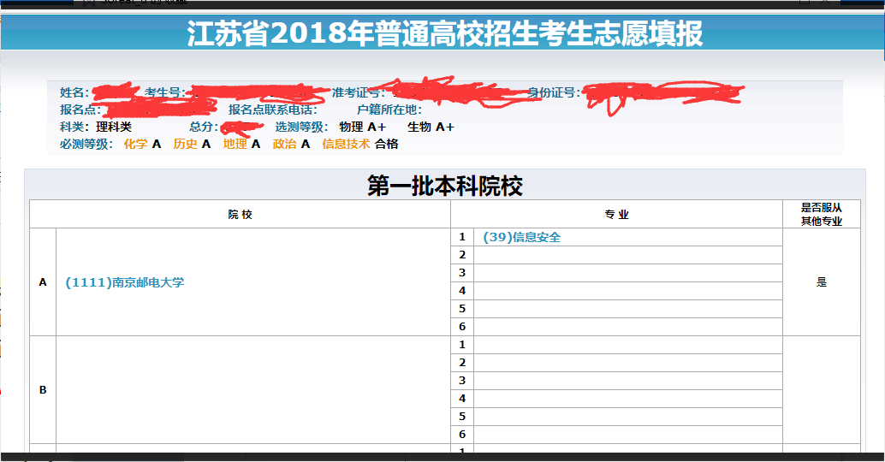

马上要大二了，故写个summary来回顾并记录下整个大一生活吧。
怎么说呢，大一的这一年。。想学的东西实在太多了，但是又大多没有去尝试，尝试了也基本只是浮于表面，难以精通，所以总会有时候感觉自己什么都没学到。但实际上，其实学的挺多了，可能只是自己不太愿意承认吧，或者自己的目标太大了，这一点点不足于满足。
大学一共就四年，读研是不太可能的了，毕竟我这一行还是技术比较重要，大四一年打算去实习，所以就只剩下3年了，而大一这一年已经过去了，过了三分之一，一想到我和大佬们的差距，就会感觉自己还是tcl。
回顾一下这过去的一年，基本都跟CTF有关吧。CTF这个东西怎么说呢，电视剧里不是说这个玩意的黄金时期有6年的么，怎么我感觉打了还不到1年就已经不太行了。而打CTF，基本上也只是从4月（还是5月）校队选拔以来才开始比较认真的在学一些东西，也找到了自己的大概一个方向，而之前的可以说就是现学现卖吧，遇到了比赛题目，再去学一些相关的东西，导致最后什么也没学到。所以，打CTF，还是需要认真地、主动地去学。
先来回顾一下这一年到底干了些什么吧。。
高考前找作文素材的时候，了解到了白帽子这个群体，再加上我自己本身也对计算机方面挺感兴趣的（可惜的是，没有在高中或者初中参加信息奥赛吧），所以高考语文作文一股脑的不顾扣不扣题直接写了乌云的事迹，强扯着往题目上扣。后来回想的时候，感觉这个作文多半是偏题了，估计分不是很高，要是没偏题的话。。。我现在也不一定来这个学校有这个水平吧。这就导致了我后来的高考成绩十分的尴尬，高考之前感觉怎么说也得有个苏大保底吧，后来分数出来后，大致估摸着自己应该进不了苏大计算机了，十分无奈，但又听苏大的学长介绍说南邮的信安很不错，就开始搜索南邮信安相关的东西，了解到这个专业南邮居然能排全国前十，而且还十分的对我的胃口，很满意。所以，后来填志愿的时候，凭借着比这个学校预估的分数线高出好多分以及优秀的选科等第，直接就填了A志愿1专业上信安，一开始连服从调剂都没选，不过后来为了稳一点，还是选择了服从调剂，可能给家里人一个安慰吧。

与此同时，我也直接去赶在计算机等级考试报名截止（大概6月底吧，填志愿的时候，那个时候还没出录取结果）之前去报考了一手一级office和二级C语言，直接把考点选在了南邮旁边的一个学校。有种破釜沉舟的感觉。而高考后的暑假也没闲着，买了本英文版的C Primer Plus直接看起来了，争取能在考试之前学会C语言吧。
7月中旬的时候，毫无悬念的，被这个学校这个专业录取了。
高考后的这个暑假，基本上就是在学C语言了吧。后来9月中旬去考的时候，也成功过了，只不过等第是及格了。。。本想考个优秀的，可是还是tcl。
9月来学校报到，一开始就直接是军训了，14天军训中途去考的试，请了两天早上的假。军训完了就去参加了校科协的招新，不过我在暑假的时候，就已经做了电子部的免试题（那个时候对动手自己做东西还是挺感兴趣的，现在也同样），但后来去听了电子部的介绍宣讲，直接把我劝退了，基本上就跟当前这个专业没多大交集，所以还是选择了去做软研的招新题，后来也成功进了软研，不过进去之后，好像就去听了一两节晚课，感觉太水了，就没再去了，也没再参加过软研相关的活动。。。
10月，大概是刚开始打CTF吧，跟隔壁宿舍的几个大佬组了个队，就开始准备月底的校赛了。校赛的话，我们队打了个校内的第6，是纯大一队伍的第一。打完后被大二的大佬们请吃饭了，第一次见郁离歌很激动。。。
11月，开始看了一本叫“汇编语言”的书？？本来想着学了点C语言，去了解下计算机内部的构造，为后面打二进制做基础。
12月，又觉得自己不太会写脚本，去学了一点python，又去报了个python的等级考试，结合廖雪峰的教程以及一本叫做“像计算机科学家一样思考Python”书学了点，算是稍微会写点打比赛用的脚本了吧。但是Python这个东西，上手起来是挺快的，但是想要深入精通学习，所需要花费的精力也是需要很多的。中旬的时候去考了下4级，没上600分，tcl。
1月，基本就是在准备期末考试吧。不过，这学期后面基本上都在逃课，感觉基本上逃了半学期课吧，每个星期去上的课不超过5节，觉得老师讲得太水了，基本都是在宿舍里拿着课本自学的。但令我很惊讶的是，虽然逃了那么多的课，但最后考完成绩出来好像还不错？？？居然还能混一个专业第11。。而且，我逃课逃的最多的两门课（一学期下来每门课可能去上课的次数不会超过5次），C语言和线代，貌似最后的分数的高的夸张，接近满分了（可能考试分数还是挺好拿的，只要平时认真做作业，但是是不是真正掌握了就很难说了）。。。这就很无语了，大家上大学来都干了些什么啊，怎么都不如高中那帮人能打啊。。。
寒假了，想想C语言都已经这么学了，怎么说也要再学点C++吧。于是，又去找了本英文版的“C++ Primer Plus”，一个寒假过去基本看完了。然后到下学期上C++课的时候，发现那个老师是真的太太太太太水了，PPT选手，废话连篇，不来上这个老师的课了。。也打了一点hgame，第一周的时候还能打到排行榜第一页（前20），后来没打就不太行了。
3月份，想想C++都已经学了点，怎么说也得学点算法和数据结构吧。于是，去找了本“Algorithm 4”，想学一手数据结构，顺便带一点算法，但书里代码都是Java写的，心想正好顺手再学一手Java也行。但是，没看几天，就去接了一个老师的虚拟化漏洞的项目，然后基本上整天都在被这个项目拖着吧，想干别的事也干不了，但又做不出什么东西来。。。
这个时候，也基本上周末都是用来在打一些CTF比赛了。每一周的周末两天，都会呆在宿舍里，面对着电脑屏幕，打开CTF比赛，自闭两天。。。
4月，项目那边也尽量在能拖就拖吧。4月20号，打了国赛，没打过大二的二队，去不了线下。不过学到了挺多东西。主要说下RSA吧，RSA这个东西，从校赛到国赛之前，基本上是看过5、6次，每次看都很迷迷糊糊地看过去，跟着网上的文章步骤，能得出flag就尽量得出flag，得不出就自闭。直到国赛的前一天晚上，在youtube上看了一个相关的视频，才总算是理解了phi函数，也就大致理解了RSA的基本原理。然后第二天国赛，正好有一个变种的RSA，用前一天晚上学到的知识，操作了很久总算解出来了。现在想想，那种题目还是挺简单的（可能现在题目做的多了，比较sophisticated吧）。
5月，大概也是开始要校队选拔了。二进制方面基本没怎么再深入学过，选的密码。后来是直接大腿亲自面的，给的题是一道17年新生杯的DES，说是如果懂密码学的应该秒解的。那个时候知道要考的是DES，前一天晚上还不直到DES是个什么东西，恶补了一波，看的只是加解密部分，没看key schedule。而这道题目给的就是给你16串子密钥和密文，问你怎么解密。做题的时候，我呆呆地看着里面的cpp代码，回想着前一天晚上学的那些东西。嗯，没错，这个步骤是用这个函数实现的，这个也是。但是那个时候我就是没学过key schedule，不知道这个子密钥是个什么东西，只记得DES的解密跟加密是差不多的。差不多有十几分钟吧，直到后来给了点提示才大概地说出用倒着的子密钥去加密就可以解密。后来，可能是觉得我出答案的速度太慢了吧，好像不是很认可。。
5月的时候，也离英语6级不远了，也花了点精力去复习吧。
校队选拔完后，我就发现我学的实在是太少了、太零散了，既然选择的是密码学，那就至少要把这一门学到能把CTF里的密码题大部分都做出来吧。于是，我就开始去看youtube一个密码学的lecture了，后来又去看了那个教授写的“Understanding Cryptography”。
6月，英语6级，打了一手神盾杯（就我和舍友两个人打，差点进线下），期末考试（依旧逃了很多课，但是排名居然仍未变。。）。也在期末考试复习期间打了一波SCTF，就两道密码学，还算可以，ak了。
7月，考完期末考试，总算是开始了真正的学习。到7月中旬的时候，看完了“Understanding Cryptography”，开始去看Python文档，想要深入学习Python。7月底，开始看“An Friendly Introduction to Number Theory”，想要学习一些数论知识，打好深入学习密码学的基础，8月中旬基本看完。期间也打过CybricsCTF，De1ltCTF以及昨天刚刚结束的SUCTF。这些比赛的密码题做起来就流畅多了，除了De1lt的两道密码题实在是水平不太够，其他的基本都能做出来。
现在的话，在总结一些密码学的题目，打算深入学习“An Introduction to Mathematical Cryptography”。计划深入学习一波后，再去看看密码学的一些实际应用，然后就准备去看“Computer System: A Programmer's Perspective”，开始认真学习二进制吧。其实网络Web方向也想去学一点。
其他方面。
英文的书籍和文章以及文档，看得算比较多了，看一些英文都没什么太大的问题了，现在。看视频基本都是在youtube上面，youtube上面有很多学习方面的视频，例如：3b1b的线代、微积分还有一些其他的数学方面，用简单的动态图形来阐释一些比较难以理解的概念，十分推荐（有的时候，我就觉得我应当去学数学的）；我看的那个Cryptography lecture，真的很棒，从一个很general的角度讲，再层层深入去讲细节；很多python的tutorial和进阶；以及很多很多别的东西。看了youtube的视频后，我的听力水平直线上上升，六级听力题都不是太大的问题。
逃课方面，主要是觉得老师讲得不太行，还不如自己看书学来的舒服。事实证明，应对考试这种东西，自己在宿舍里一个人看书自学，最后的效果也还不错。毕竟，hacker没有点自学能力，那还能叫hacker么？还有，我感觉这个大学的这种强硬式的教学制度跟当初上大学之前想象的完全不一样，本以为上大学就是那种什么课都是你自己选择，你想上什么就上什么的那种。可是事实上，还是有很多没用的水课，会耽误你的时间。可能是因为现在上大学的人多了，大学给你的只能是通识教育，你想成为精英，想成为大佬，还是需要你自己额外的努力吧。
女朋友。可以有，但没必要。学技术都觉得时间不太够，哪有闲工夫去谈女朋友？？？而且，周末基本上都是在电脑面前打CTF比赛，哪能分出身来去陪女朋友？？除非。。。
可能还是太宅了吧，基本上都没怎么认识过女生，社交活动也基本为0。也很少去运动，下学期一定要多出去骑骑车了。。。
差不多就这样吧，不知所言。